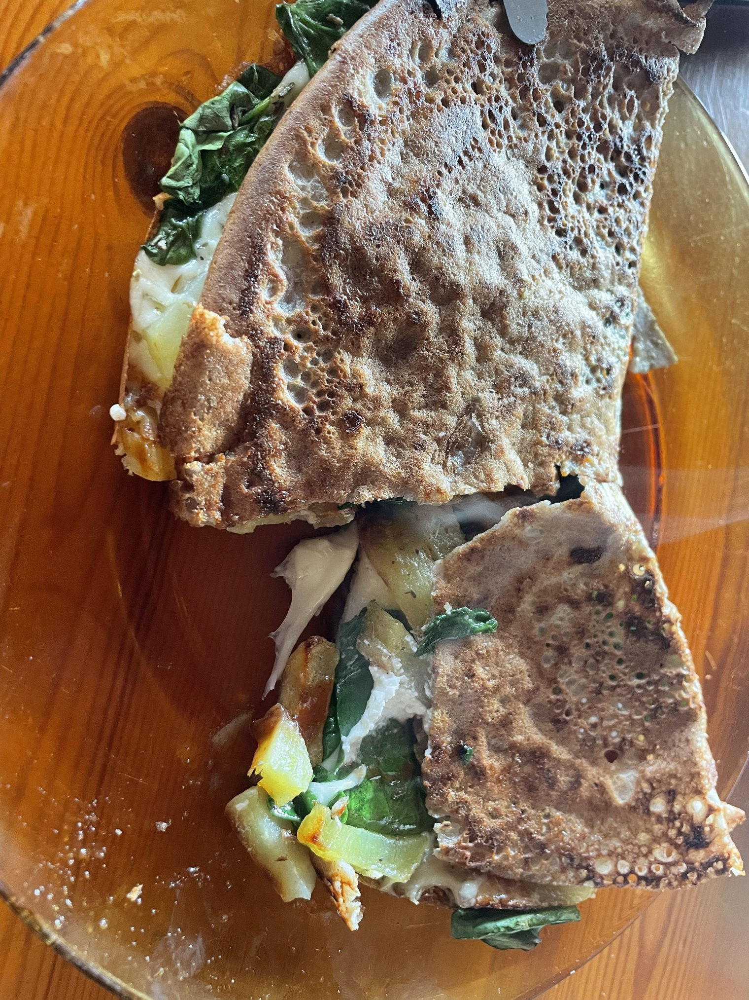

Galette de trigo sarraceno con espinacas, patata y queso
Ingredients
2×
- 125 g de harina de trigo sarraceno
- 300 ml de agua
- pizca de sal
- 2 patatas
- aceite
- 200 g de espinacas
- 80 g de queso (de cabra o rallado)

Preparación
Paso 1
Mezclar 125 g de harina de trigo sarraceno con 300 ml de agua y una pizca de sal, y dejar reposar 30min.
Paso 2
Dorar 2 patatas en dados en la sartén con aceite. Saltear 200 g de espinacas.
Paso 3
Hacer las galettes en una sartén bien caliente, rellenarlas con las patatas, las espinacas y 80 g de queso (de cabra o rallado), y doblarlas hasta que el queso se funda.